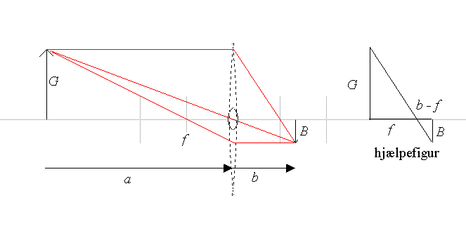
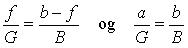
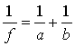
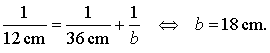
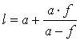

se også brydning i en kugleflade.

På dette billede afbildes en genstand G i et billede B i en tynd linse. Linsen en begrænset af to kuglekalotter. At linsen er tynd betyder, at vi kan se bort fra tykkelsen ved beregning af strålegangen. Der er to grunde til at linsen er tegnet stiplet! Den ene er, at strålerne tegnes som om de brydes i linsens midterlinie. Den anden grund er, at i en fysisk korrekt tegning vil genstand og billede være så langt væk fra linsen i forhold til dennes diameter, at tegningen bliver uoverskuelig. På billedet herover er linsen tegnet korrekt med optrukket streg i forhold til brændvidden f.
Som det ses på figuren kan billedet konstrueres vha. følgende linseregler:
Derfor kan vi også slutte, at en bundt af stråler parallelt med den optiske akse vil brydes og samles i linsens brændpunkt.
Der dannes ikke altid et fysisk billede af genstanden, men det kan du selv undersøge i programmet.
Vi kan beregne billedets position vha. linseformlen.
hvor a er afstanden fra genstanden til linsen, b er afstanden fra linsen til billedet og f er linsens brændvidde.
Formlen udledes ved at betragte to ensvinklede trekanter på figuren, hvor der gælder:

Det første forhold indses lettest ved at betragte hjælpefiguren øverst til højre.
Hvilke trekanter på figuren er der tale om?
Udled selv linseformlen vha. disse to ligninger.
Ved en linses styrke, D forstås den reciprokke værdi af brændvidden, f. Brændvidden måles i meter og styrken i m-1 = dioptrier. Bemærk, at en spredelinse har negativ brændvidde og negativ styrke.
En lampe står 36 cm fra en samlelinse med brændvidden 12 cm. I hvilken afstand dannes billedet og er det virkeligt eller imaginært?
Vi indsætter i linseformlen:

og får:

Da b er positiv er billedet virkeligt.
En linse har brændvidden f = 20 cm. En genstand G anbringes i afstanden 55 cm fra linsen. Beregn billedafstanden, b og højden af billedet B.
Hvor er genstanden anbragt, når billedet er indbildt og dobbelt så højt som genstanden?
Bestem linsens brændvidde fx ved at bruge den som brændglas i sollys.
Kik nu på en avistekst i luppen. Er teksten indenfor brændvidden eller udenfor?
Ser du et virkeligt billede eller et indbildt billede?
Hvor mange gange forstørre luppen teksten?
Bestemmelse af mindste afstand mellem billede og genstand.
Man kan nemt finde denne i simulationen ved at flytte genstanden G og holde øje med billedet B, men den mindste afstand kan også udregnes rent matematisk vha. linseformlen. Kaldes afstanden, l gælder der:
l = a + b og
Isoler b i linseformlen og indsæt b i udtrykket for l og vis, at

Differentier herefter l med hensyn til a, og find den værdi af a, for hvilken l er mindst.
Bestem herefter minimumsafstanden mellem genstand og billede.